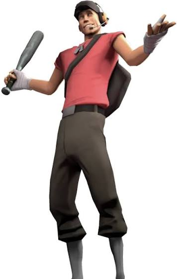
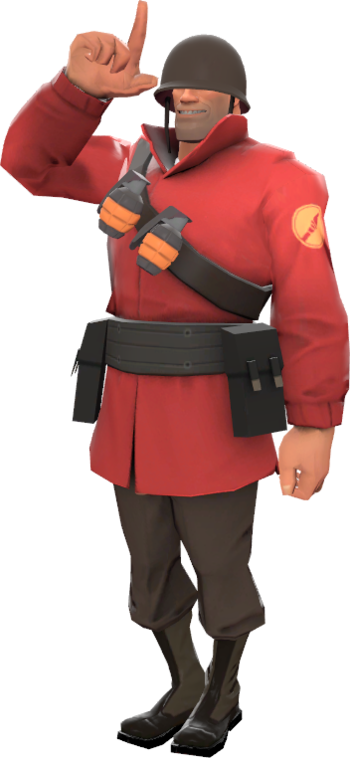

Основная информация
Team Fortress — это культовая серия командных многопользовательских шутеров от первого лица, начавшаяся с мода для Quake в 1996 году и ставшая популярной благодаря Team Fortress 2 от Valve. Игра строится на противостоянии двух команд (RED и BLU), где девять уникальных классов используют свои сильные стороны для выполнения целей на картах
Основные игры серии
Team Fortress (1996): Модификация для оригинальной игры Qu, которая ввела понятие командных классов.Team Fortress Classic (1999): Перенос оригинального мода на движок GoldSrc от Valve Corporation.Team Fortress 2 (2007): Главная игра серии с узнаваемым мультяшным стилем, сильной комедийной составляющей и глубокой тактической механикой.
Девять классов персонажей
Все персонажи делятся на три роли:Атака: Разведчик (Scout), Солдат (Soldier), Поджигатель (Pyro).Поддержка: Подрывник (Demoman), Пулеметчик (Heavy), Инженер (Engineer).Защита / Спецслужбы: Медик (Medic), Снайпер (Sniper), Шпион (Spy).
Скаут

быстрые бойцы из Бостона, использующие тактику «ударь и беги». Они вооружены обрезом, пистолетом и битой, имеют высокий темп передвижения, но обладают малым запасом здоровья, что требует постоянного движения на поле боя.
- Характеристики и Оружие
- Здоровье: 125 единиц (один из самых низких показателей в игре).
- Скорость: 133% от базовой скорости (самый быстрый класс).
- Слот 1 (Основное):
- Обрез (Scattergun) для мощного урона вблизи.
- Слот 2 (Дополнительное): Пистолет или энергетические напитки (Бонк! Атомный залп).
- Слот 3 (Ближний бой): Бейсбольная бита или другие уникальные предметы.
- Игровая Роль
- Захват точек: Считается за двух человек при захвате контрольных точек и тележки.
- Фланги: Идеален для внезапных атак с тыла и уничтожения одиночных целей (например, вражеских снайперов или медиков).
- Мобильность: Двойной прыжок позволяет занимать высокие позиции и уворачиваться от вражеского огня.
Солдат

Солдат в Team Fortress 2 — это сильный, живучий и простой в освоении класс американского патриота, вооруженный ракетницей. Он имеет 200 единиц здоровья, наносит большой урон по площади и умеет делать реактивные прыжки (рокет-джампы), что делает его отличным выбором как для новичков, так и для ветеранов.
- Основные характеристики
- Здоровье: 200 HP (до 300 при сверхлечении).
- Скорость: 80% от стандартной скорости разведчика.
- Роль: Нападение, поддержка и прорыв обороны.
- Озвучка: Легендарный голос покойного актёра Рика Мэя. Настоящее имя (по данным на почтовом ящике) — Джейн Доу.
- Игровая роль
- Ударь и беги: Солдат использует рокетджамп для внезапного налета сверху, наносит огромный урон ракетами и быстро улетает обратно.
- Фланговые атаки: Занимает высокие позиции и обстреливает врагов с неожиданных углов, пока они отвлечены.
- Охота за целями: Идеально уничтожает скопления врагов и ломает постройки Инженера.